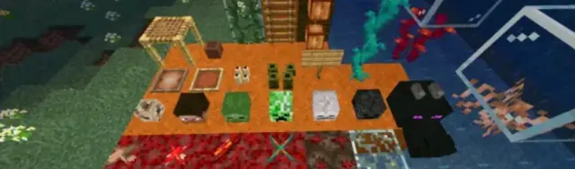
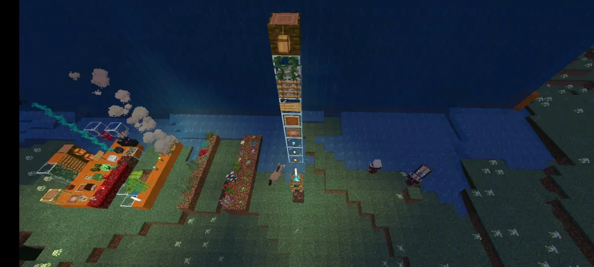
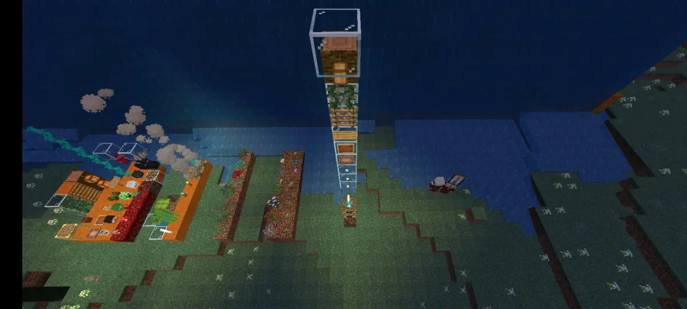
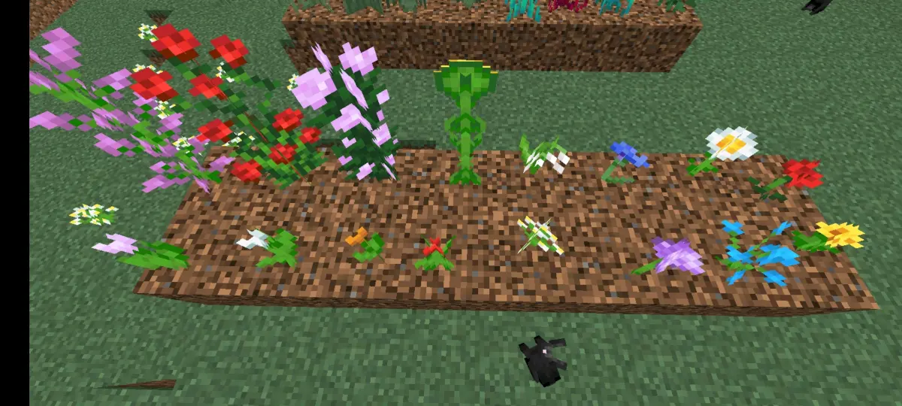
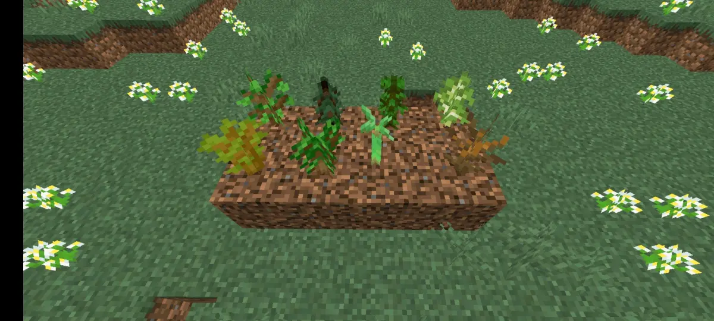
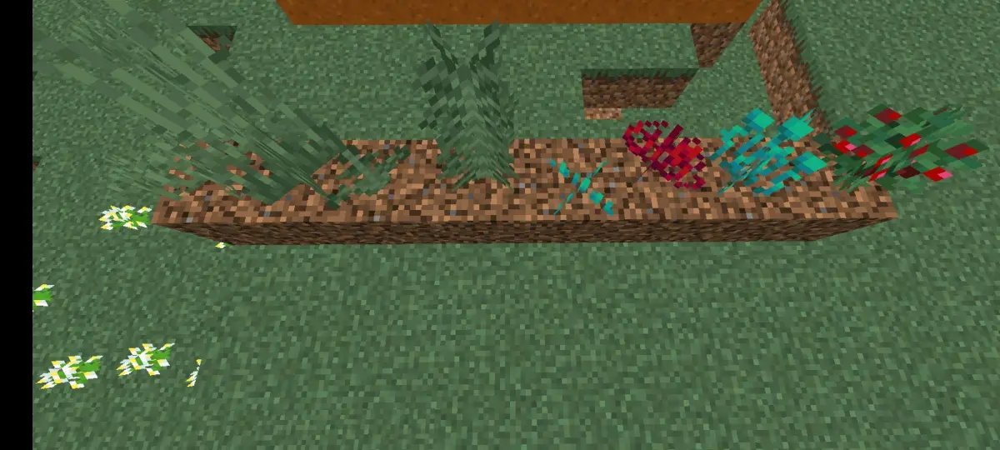
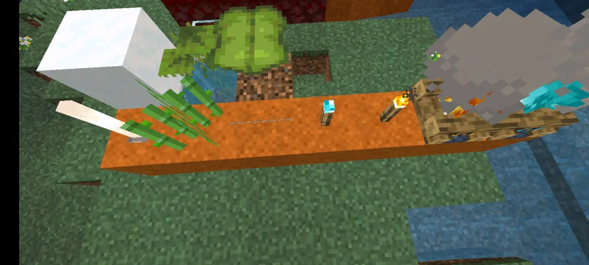
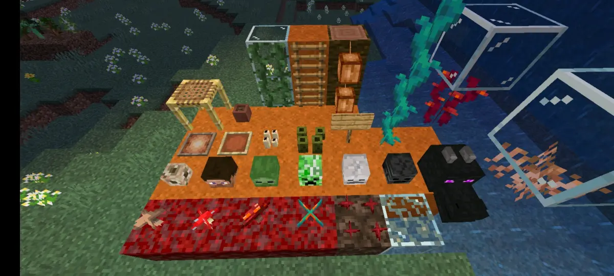

首先你要知道一点，可以被判定为空气类方块的方块有两类，一类是真空气方块，比如空气、水、岩浆、光源方块等，而另外一类就是这里要讲的伪空气类方块
首先讲一下伪空气类方块是怎么被判定为空气类方块的，实际上，它的作用就是，将空气类方块的判定转移到上一格，并且可以无限向上，直到找到第一个不是该类型方块的方块，可能你们听的不是很明白，这里看一张图

图中灵魂沙上方所有的方块，全部都属于伪空气类方块，而最后一个伪空气类方块上方是空气，所以下方全部的伪空气类方块全部被判定为是空气类方块，如果要在灵魂沙上进行生成尝试的话，就已经满足了空气类方块的要求，如果同時还满足其他的空间检测，那么就可以成功的进行生成

但是如果和这张图片一样，最上方出现的第一个方块是玻璃，不属于空气类方块，则下方所有的伪空气木头类方块全部不被判定为空气类方块，如果要在灵魂沙上进行生成尝试，都会因为缺少空气类方块而失败
根据大量的测试结果，发现其实大部分的伪空气类方块，都是属于完全不阻碍生成方块，当然，也有一部分像篝火这种，属于不完全阻碍生成方块，当然要注意一点，即使伪空气类反馈被判定为空气类方块，同样保留有原本的性质，比如说雪片垂滴叶等仍然可以挤压生物，且不能与限制生成的方块共存，因此，在实际操作中是需要注意的
这里是我们测试出来的部分该类型的方块，可能还有一部分没有被测试到，欢迎评论区补充，请看图片





总之，还有一些懒得把图片放出来的，就直接说一下结果，青蛙卵以及各种农作物也属于该类，荷叶不属于，中继器比较器，红石火把，红石粉拉杆绊线钩也属于，除此之外，结构空位传送门之类的非法方块不在本次测试范围之内，虽然他们也属于该类型的方块，行吧，这是我们发的第一篇专栏，不喜勿喷，到此结束，问题不大